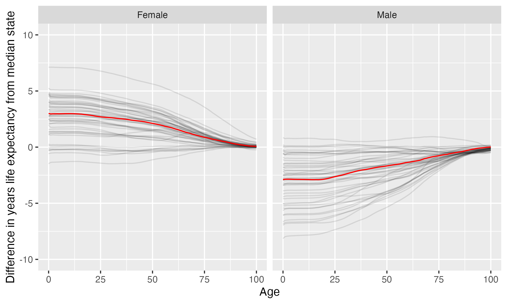

Frostburg State University
Frostburg State University is located in Frostburg, Maryland. It is a public, 4-year or above institution.
From Wikipedia: Frostburg State University (FSU) is a public university in Frostburg, Maryland. The university is the only four-year institution of the University System of Maryland west of the Baltimore-Washington passageway in the state’s Appalachian highlands. Founded in 1898 by Maryland State Senator, John Leake, Frostburg was selected because the site offered the best suitable location without a cost to the state. Today, the institution is a largely residential university. With an enrollment of approximately 4,858 students, the university offers 47 undergraduate majors, 16 graduate programs, and a doctorate in educational leadership. The university is accredited by the Middle States Commission on Higher Education and places primary emphasis on its role as a teaching and learning institution.
Notes
These are items that bear looking into more closely.
This institution’s full-time undergraduate enrollment has tended to decrease over time.
From 2010 to 2021, full time undergraduate enrollment dropped from 4544 to 2888, a decline of 36.4%
Overview of institution
Institution kind: Master’s Colleges & Universities: Larger Programs
Undergrad program: Balanced arts & sciences/professions, some graduate coexistence
Graduate program: Research Doctoral: Single program-Education
Enrollment profile: High undergraduate (see more details below)
Average net price for undergrads on financial aid: $16,720 (1.2 times the equivalent cost of Harvard).
Average net price for families with $30K-48K income: $14,256 (This is $12,860 more expensive than what Harvard costs for equivalent students).
Actual price for your family: Go here to see what your family may be asked to pay. It can be MUCH lower than the average price but also higher for some.
Size and setting: Four-year, medium, primarily residential
In state percentage: 84.5% of first year students come from Maryland
In US percentage: 99.1% of first year students come from the US (note that 0.0% have no residence reported)
Graduation rate (within 6 years) for students seeking a Bachelors: 47.6% (this is what is usually reported as “graduation rate”)
Graduation rate (within 4 years) for students seeking a Bachelors: 25.1%
Percent of students seeking a Bachelors who transfer out of this institution: 12.1%
Student to tenure-stream faculty ratio: 17.7 (undergrads to tenure-stream faculty) [Tenure explained]
Student to faculty ratio: 14.8 (undergrads to all faculty)
Degrees offered: Certificate of less than 1 year, Certificate of at least 12 weeks but less than 1 year, Bachelor’s degree, Postbaccalaureate certificate, Master’s degree, Post master’s certificate, Doctor’s degree: research scholarship
Schedule: Semester
Institution provides on campus housing: Yes
Dorm capacity: There are enough dorm beds for 1656 students
Freshmen required to live on campus: No
Meal plan: Yes, number of meals in the maximum meal plan offered
Covid vaccination requirement for students: At some point during the pandemic (this may have changed), this institution required students to be vaccinated against covid (based on info from here)
Covid vaccination requirement for faculty/staff: At some point during the pandemic (this may have changed), this institution required faculty and/or staff to be vaccinated against covid (based on info from here)
Advanced placement (AP) credits used: Yes
Disabilities: 7 percent of undergrads are registered as having disabilities.
Overview of location
- Abortion in this state: Protective (based on https://states.guttmacher.org/policies/ as of May 10, 2023)
- Gun law stringency: A- (higher grade = more stringent)
- State rep support for contraception: 87.5% of US reps from this state voted in favor of legal protections for contraception.
- State rep support for recognizing same-sex and interracial marriage: 87.5% of US reps from this state voted in favor of requiring states to recognize same-sex and interracial marriages performed in other states
- Anti-trans legislative risk: Safest (based on Erin Reed’s work, as of May 19, 2023)
- Ecological region: Appalachian mixed mesophytic forests
- Biome: Temperate Broadleaf & Mixed Forests
- Distance to mountains: 0 miles to Appalachian Mountains
- Climate: See overview at WeatherSpark
Similar institutions
This is using information about school size, acceptance rate, yield rate, graduation rate, cost, athletic conference, and similar metrics, but it can miss important axes of similarity (for example, culinary versus hair styling schools).
Map
Enrollment
| Frostburg State University | Change over ≤ 11 years | Trend | Mountain East Conference | Master’s Colleges & Universities: Larger Programs | |
|---|---|---|---|---|---|
| Undergrads (full time) | 2,888 (2021) |

|
↓ -123 per year |
||
| Undergrads (part time) | 792 (2021) |

|
↑ 57 per year |
||
| Grad students (full time) | 264 (2021) |

|
|||
| Grad students (part time) | 508 (2021) |

|
|||
| Admission rate (undergrads) | 86% (2021) |

|
|||
| Yield rate (percent of applicants offered undergraduate admission who accept) | 16% (2021) |

|
✪✪ Better (higher) than 27% |
✪✪ Better (higher) than 29% |
|
| Graduation rate (bachelors in 6 years) | 48% (2021) |

|
✪✪✪✪ Better (higher) than 77% |
✪✪ Better (higher) than 34% |
|
| Transfer out rate (bachelors) | 12% (2021) |

|
✪✪✪✪ Better (lower) than 70% |
✪✪✪✪✪ Better (lower) than 81% |
Student financing
At many universities, almost no students pay the listed tuition and fees (“sticker price”): instead, their financial aid package lowers this dramatically, but how much students pay can vary substantially based on family income and other factors. The tuition below is the average across many students receiving aid: your family may be asked to pay less or more than this.
| Frostburg State University | Change over ≤ 11 years | Trend | Mountain East Conference | Master’s Colleges & Universities: Larger Programs | |
|---|---|---|---|---|---|
| Average net price (for students awarded aid) | $16,720 (2020) |

|
↑ $459 per year |
✪✪✪ Better (lower) than 50% |
✪✪✪ Better (lower) than 51% |
| Undergrads getting federal aid | 70% (2021) |

|
✪✪✪✪ Better (higher) than 77% |
✪✪✪✪ Better (higher) than 75% |
|
| Undergrads getting any aid | 95% (2021) |

|
✪✪ Better (higher) than 23% |
✪✪ Better (higher) than 40% |
|
| Undergrads getting Pell grants | 44% (2021) |

|
✪✪ Better (higher) than 38% |
✪✪✪ Better (higher) than 60% |
Teaching
| Frostburg State University | Change over ≤ 11 years | Trend | Mountain East Conference | Master’s Colleges & Universities: Larger Programs | |
|---|---|---|---|---|---|
| Undergrads per tenure track instructor (lower is better) | 18 (2019) |

|
↓ -0.3 per year |
✪✪✪✪ Better (lower) than 80% |
✪✪✪✪ Better (lower) than 70% |
| Undergrads per instructor (lower is better) | 15 (2019) |

|
↓ -0.3 per year |
✪✪✪ Better (lower) than 54% |
✪✪✪✪ Better (lower) than 64% |
| Total instructors | 239 (2020) |

|
|||
| Tenure track instructors | 200 (2020) |

|
↓ -2.0 per year |
||
| Non-tenure track instructors | 39 (2020) |

|
Student details
| Frostburg State University | Change over ≤ 11 years | Trend | |
|---|---|---|---|
| Dorm capacity | 1,656 (2021) |

|
↓ -34 per year |
| Percent of undergrads with registered disabilities (≤3 is rounded up to 3) | 7% (2021) |

|
Institution finances
| Frostburg State University | Change over ≤ 11 years | Trend | Mountain East Conference | Master’s Colleges & Universities: Larger Programs | |
|---|---|---|---|---|---|
| Revenue from tution and fees | 21% (2021) |

|
✪✪✪ Better (lower) than 54% |
✪✪✪✪✪ Better (lower) than 89% |
|
| Revenue minus expenses | $8.2 M (2021) |

|
✪✪✪ Better (higher) than 54% |
✪✪ Better (higher) than 38% |
|
| Revenue | $127 M (2021) |

|
|||
| Expenses | $119 M (2021) |

|
↑ $2.6 M per year |
||
| Assets | $263 M (2021) |

|
↑ $13 M per year |
✪✪✪✪✪ Better (higher) than 92% |
✪✪✪ Better (higher) than 51% |
Graduation rates
Graduation rates for bachelor’s degrees within 150% of normal time (6 years for a 4-year degree). Note that this uses US federal demographic data: it only has two genders and a specified set of ethnicities and races. For groups with small numbers, the graduation rate may be highly variable year to year (do all three people in this group graduate this year or just two of three, for example).
| Frostburg State University | Change over ≤ 11 years | Mountain East Conference | Master’s Colleges & Universities: Larger Programs | |
|---|---|---|---|---|
| Total | 48% (2021) |

|
✪✪✪✪ Better (higher) than 77% |
✪✪ Better (higher) than 34% |
| Men | 41% (2021) |

|
✪✪✪✪ Better (higher) than 69% |
✪✪ Better (higher) than 31% |
| Women | 55% (2021) |

|
✪✪✪✪ Better (higher) than 77% |
✪✪✪ Better (higher) than 46% |
| American Indian or Alaska Native men | 0% (2021) |

|
✪✪✪ Better (higher) than 50% |
✪✪ Better (higher) than 39% |
| American Indian or Alaska Native women | 33% (2021) |

|
✪✪ Better (higher) than 29% |
✪✪✪ Better (higher) than 48% |
| Asian men | 67% (2021) |

|
✪✪✪✪✪ Better (higher) than 88% |
✪✪✪✪ Better (higher) than 74% |
| Asian women | 75% (2021) |

|
✪✪✪ Better (higher) than 50% |
✪✪✪✪ Better (higher) than 67% |
| Black or African American men | 38% (2021) |

|
✪✪✪✪✪ Better (higher) than 92% |
✪✪✪✪ Better (higher) than 61% |
| Black or African American women | 52% (2021) |

|
✪✪✪✪ Better (higher) than 75% |
✪✪✪✪ Better (higher) than 67% |
| Hispanic men | 32% (2021) |

|
✪✪✪✪ Better (higher) than 73% |
✪✪ Better (higher) than 26% |
| Hispanic women | 52% (2021) |

|
✪✪✪✪ Better (higher) than 70% |
✪✪✪ Better (higher) than 55% |
| Native Hawaiian or other Pacific Islander men | 0% (2019) |

|
✪✪✪✪✪ Better (higher) than 100% |
✪✪ Better (higher) than 35% |
| Native Hawaiian or other Pacific Islander women | 50% (2018) |

|
✪ Better (higher) than 0% |
✪✪✪✪ Better (higher) than 66% |
| White men | 48% (2021) |

|
✪✪✪✪ Better (higher) than 69% |
✪✪ Better (higher) than 36% |
| White women | 58% (2021) |

|
✪✪✪✪ Better (higher) than 77% |
✪✪ Better (higher) than 38% |
| Two or more races men | 30% (2021) |

|
✪✪✪✪ Better (higher) than 62% |
✪✪ Better (higher) than 28% |
| Two or more races women | 61% (2021) |

|
✪✪✪✪ Better (higher) than 80% |
✪✪✪✪ Better (higher) than 69% |
| Nonresident alien men | 27% (2021) |

|
✪✪ Better (higher) than 22% |
✪✪ Better (higher) than 20% |
| Nonresident alien women | 0% (2021) |

|
✪✪ Better (higher) than 29% |
✪ Better (higher) than 12% |
Freshmen demographics
Demographic data for first time degree-seeking students. Note that this uses US federal demographic data: it only has two genders and a specified set of ethnicities and races.
| Frostburg State University | Change over ≤ 11 years | |
|---|---|---|
| Men (percent freshmen) | 50% (2021) |

|
| Women (percent freshmen) | 50% (2021) |

|
| American Indian or Alaska Native men (percent freshmen) | 0% (2021) |

|
| American Indian or Alaska Native women (percent freshmen) | 0.2% (2021) |

|
| Asian men (percent freshmen) | 0.5% (2021) |

|
| Asian women (percent freshmen) | 0.3% (2021) |

|
| Black or African American men (percent freshmen) | 18% (2021) |

|
| Black or African American women (percent freshmen) | 15% (2021) |

|
| Hispanic men (percent freshmen) | 4.1% (2021) |

|
| Hispanic women (percent freshmen) | 3.1% (2021) |

|
| Native Hawaiian or Other Pacific Islander men (percent freshmen) | 0% (2021) |

|
| Native Hawaiian or Other Pacific Islander women (percent freshmen) | 0% (2021) |

|
| White men (percent freshmen) | 25% (2021) |

|
| White women (percent freshmen) | 28% (2021) |

|
| Two or more races men (percent freshmen) | 1.4% (2021) |

|
| Two or more races women (percent freshmen) | 2.9% (2021) |

|
| Race ethnicity unknown men (percent freshmen) | 1.0% (2021) |

|
| Race ethnicity unknown women (percent freshmen) | 0.2% (2021) |

|
| Nonresident alien men (percent freshmen) | 0.7% (2021) |

|
| Nonresident alien women (percent freshmen) | 0.2% (2021) |

|
Freshmen geography
| Frostburg State University | Change over ≤ 11 years | |
|---|---|---|
| In state | 84% (2021) |

|
| US | 99% (2021) |

|
| Not reported | 0% (2021) |

|
Tenure track faculty
Tenure track faculty are those who are eligible for tenure. This includes both pre-tenure and tenured faculty. Once faculty get tenure, they are (generally) protected from being fired for intellectual reasons, helping to ensure their freedom in teaching and research. They can still lose their positions for misconduct, financial problems, not fulfilling their duties, or other reasons. Note that this chart uses US federal demographic data: it only has two genders and a specified set of ethnicities and races.
| Frostburg State University | Change over ≤ 11 years | Trend | |
|---|---|---|---|
| Total (tenure-track count) | 200 (2020) |

|
↓ -2.0 per year |
| Women (tenure-track count) | 88 (2020) |

|
|
| Men (tenure-track count) | 112 (2020) |

|
↓ -2.0 per year |
| American Indian or Alaska Native (tenure-track count) | 0 (2020) |

|
|
| Asian (tenure-track count) | 21 (2020) |

|
↑ 0.9 per year |
| Black or African American (tenure-track count) | 11 (2020) |

|
|
| Hispanic or Latino (tenure-track count) | 3 (2020) |

|
|
| Native Hawaiian or other Pacific Islander (tenure-track count) | 0 (2020) |

|
|
| White (tenure-track count) | 156 (2020) |

|
↓ -3.1 per year |
| Two or more races (tenure-track count) | 0 (2020) |

|
|
| Nonresident alien (tenure-track count) | 9 (2020) |

|
↑ 0.3 per year |
Non-tenure track faculty
Non-tenure track faculty are not eligible for tenure. Some are hired one semester at a time, some have multi-year contracts. They typically have a higher teaching load than tenure track faculty, leaving less time for research or other creative endeavors. They are also easier to fire than tenured faculty. Sometimes they are external experts (a noted musician, a former senator) who are hired to teach some classes without the expected permanence of a tenure-track position. Note that this chart uses US federal demographic data: it only has two genders and a specified set of ethnicities and races.
| Frostburg State University | Change over ≤ 11 years | Trend | |
|---|---|---|---|
| Total (non-tenure-track count) | 39 (2020) |

|
|
| Women (non-tenure-track count) | 21 (2020) |

|
|
| Men (non-tenure-track count) | 18 (2020) |

|
|
| American Indian or Alaska Native (non-tenure-track count) | 0 (2020) |

|
|
| Asian (non-tenure-track count) | 3 (2020) |

|
↑ 0.3 per year |
| Black or African American (non-tenure-track count) | 1 (2020) |

|
↑ 0.2 per year |
| Hispanic or Latino (non-tenure-track count) | 0 (2020) |

|
↓ -0.2 per year |
| Native Hawaiian or other Pacific Islander (non-tenure-track count) | 0 (2020) |

|
|
| White (non-tenure-track count) | 34 (2020) |

|
|
| Two or more races (non-tenure-track count) | 1 (2020) |

|
|
| Nonresident alien (non-tenure-track count) | 0 (2020) |

|
Library facilities
| Frostburg State University | Change over ≤ 11 years | Trend | Mountain East Conference | Master’s Colleges & Universities: Larger Programs | |
|---|---|---|---|---|---|
| Number of physical books | 230,690 (2021) |

|
↓ -19,630 per year |
✪✪✪✪✪ Better (higher) than 100% |
✪✪✪✪ Better (higher) than 67% |
| Physical library circulations per students and faculty | 1.4 (2019) |

|
↓ -0.2 per year |
✪✪ Better (higher) than 40% |
✪✪✪ Better (higher) than 40% |
| Digital library circulations per students and faculty | 0.6 (2019) |

|
✪ Better (higher) than 10% |
✪ Better (higher) than 8% |
Life expectancy
This hopefully will not be relevant for potential students, but it may be for people moving to an area longer term, such as faculty and staff choosing where to live. This uses information from US National Vital Statistics Reports for 2020; like much federal data, it assumes people are male or female. For age difference from median, it is from the median state, averaging across all genders (one consequence of this is that the difference from the median life expectancy is almost always negative for men).
- Life expectancy at birth: 79.7 years women (3 years over the median), 73.8 years men (2.9 years below the median)
- Remaining life expectancy at age 18: 62.3 years women (2.9 years over the median), 56.5 years men (2.9 years below the median)
- Remaining life expectancy at age 30: 50.8 years women (2.6 years over the median), 45.7 years men (2.4 years below the median)
- Remaining life expectancy at age 45: 36.8 years women (2.3 years over the median), 32.7 years men (1.8 years below the median)
- Remaining life expectancy at age 60: 23.6 years women (1.7 years over the median), 20.6 years men (1.4 years below the median)
We can also plot the extra / fewer years of life expected for this state (red) compared to other states (dark gray) at each age. Again, this is normalized for the median state.

SAT scores
| Frostburg State University | Change over ≤ 11 years | Trend | |
|---|---|---|---|
| Applicants submitting SAT | 33% (2021) |

|
|
| SAT Evidence Based Reading and Writing 25th percentile score | 500 (2021) |

|
|
| SAT Evidence Based Reading and Writing 75th percentile score | 610 (2021) |

|
|
| SAT Math 25th percentile score | 480 (2021) |

|
↑ 6.2 per year |
| SAT Math 75th percentile score | 590 (2021) |

|
↑ 6.7 per year |
ACT scores
| Frostburg State University | Change over ≤ 11 years | Trend | |
|---|---|---|---|
| Applicants submitting ACT | 4% (2021) |

|
|
| ACT Composite 25th percentile score | 17 (2021) |

|
|
| ACT Composite 75th percentile score | 25 (2021) |

|
↑ 0.4 per year |
| ACT English 25th percentile score | 16 (2021) |

|
|
| ACT English 75th percentile score | 24 (2021) |

|
↑ 0.3 per year |
| ACT Math 25th percentile score | 16 (2021) |

|
|
| ACT Math 75th percentile score | 25 (2021) |

|